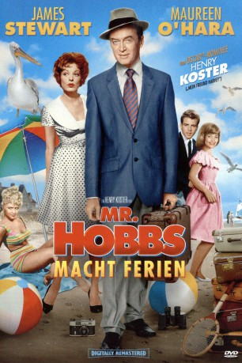

#2408 Mr. Hobbs macht Ferien
Alternativ: Mr. Hobbs Takes a Vacation
 
 IMDB-Wertung: 6.9 / 10
IMDB-Wertung: 6.9 / 10  Metascore: 0
Metascore: 0 
Mr. Roger Hobbs, ein schwer arbeitender Familienvater, plant für den Urlaub dieses Jahr eine schöne Weltreise nur für sich und seine Frau. Doch diese macht ihm einen Strich durch die Rechnung: Sie möchte mit der ganzen Familie einschließlich Enkelkinder den Urlaub in einem Ferienhaus am Meer verbringen. Dieses erweist sich beim Eintreffen auch noch als Bruchbude. Die mitgenommene Haushälterin ist entsetzt und sucht nach kurzer Zeit das Weite. Bei einer Bootsfahrt mit seinem Sohn verlieren sie im Nebel die Orientierung und gelangen nur mit Glück wieder zum Hafen. Außerdem lässt sich der exzentrische Vogelbeobachter Martin Turner mit seiner Frau in dem Haus nieder und sorgt für weitere Komplikationen. Und so wird es für Mr. Hobbs nicht viel mit Geruhsamkeit.
Jahr: 1962
Dauer: 116 Minuten
FSK: 6
Land: USA Studio: Twentieth Century-Fox Film CorporationTonspuren: DD2.0 - ,
Untertitel: Deutsch,
Auflösung: 1080p (1920x816) Größe: 8960 MB
Genre: Komödie, Familie
Regisseur: Henry Koster
Drehbuch: Nunnally Johnson, Edward Streeter
Soundtrack: Henry Mancini
Darsteller:
 James Stewart als Roger Hobbs
James Stewart als Roger Hobbs Maureen O'Hara als Peggy Hobbs
Maureen O'Hara als Peggy Hobbs- Fabian als Joe Carmody
- Lauri Peters als Katey Hobbs
 John Saxon als Byron Grant
John Saxon als Byron Grant John McGiver als Martin Turner
John McGiver als Martin Turner Reginald Gardiner als Reggie McHugh
Reginald Gardiner als Reggie McHugh Natalie Trundy als Susan Carver
Natalie Trundy als Susan Carver- Herb Alpert als Trumpet Player in Dance Band , uncredited
 Bill Hickman als Driver in Bird Walk Scene , uncredited
Bill Hickman als Driver in Bird Walk Scene , uncredited- Stephen Mines als Carl , uncredited
- Lili Gentle als Janie Grant
- Marie Wilson als Emily Turner
- Valerie Varda als Marika Carter
- Josh Peine als Stan Carver
- Michael Burns als Danny Hobbs
 Minerva Urecal als Brenda
Minerva Urecal als Brenda- Richard Collier als Mr. Kagle
- Paul Bradley als Man at Dance , uncredited
 Harry Carter als Man at Dance / Cab Driver , uncredited
Harry Carter als Man at Dance / Cab Driver , uncredited- Daryl Duke als Boy , uncredited
- True Ellison als Girl in Dormitory , uncredited
- Ernie Gutierrez als Pizza Maker , uncredited
 Colin Kenny als Bartender , uncredited
Colin Kenny als Bartender , uncredited- Tom Lowell als Freddie , uncredited
- Barbara Mansell als Ellen, the Receptionist , uncredited
 Harold Miller als Man at Dance , uncredited
Harold Miller als Man at Dance , uncredited- Peter Oliphant als Peter Carver , uncredited
- Doris Packer als Hostess , uncredited
 Cosmo Sardo als Man at Dance , uncredited
Cosmo Sardo als Man at Dance , uncredited Jeffrey Sayre als Man at Dance , uncredited
Jeffrey Sayre als Man at Dance , uncredited- Michael Sean als Phil , uncredited
- Maida Severn als Secretary , uncredited
- Arthur Tovey als Man at Dance , uncredited
- Dennis Whitcomb als Dick , uncredited
Datei: X:\1962\Mr. Hobbs macht Ferien (1962, FSK6, 1920x816).mkv seit 05.11.2015
Festplatte: HD 1900-1970
 Es gibt insgesamt 23 Filme in der Gruppe '1962'
Es gibt insgesamt 23 Filme in der Gruppe '1962'